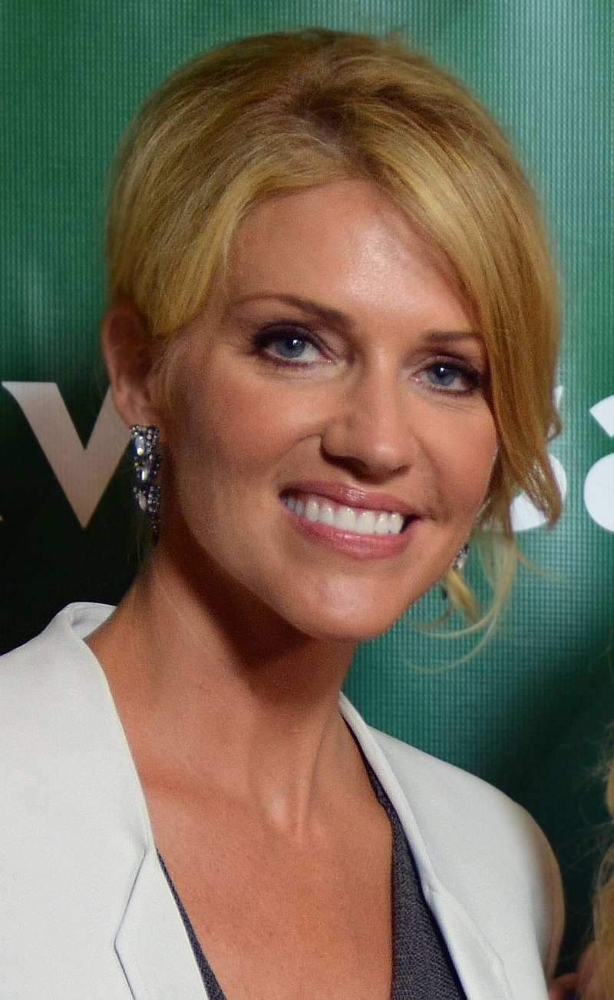

Люцифер, эксцентричный Король Ада, заскучал на своём троне и решил посетить Лос-Анджелес. Люцифер становится владельцем роскошного ночного клуба Lux и ведёт разгульный образ жизни. После убийства знакомой ему девушки Люцифер решает разузнать, кто виновен в её смерти. В процессе расследования он знакомится с детективом Хлоей Декер. Люцифер неожиданно для себя обнаруживает, что не имеет над девушкой власти и его роковое обаяние на неё не действует. Заинтригованный этим обстоятельством Король Ада становится её партнёром и консультантом по раскрытию преступлений. Сверхъестественные способности помогают ему и Хлое в совместной работе. Ситуация осложняется тем, что Люциферу постоянно напоминают о возвращении назад в преисподнюю, где без хозяина постепенно воцаряется хаос.
Эксцентричный Король Ада, желающий разнообразить свою жизнь и оставивший преисподню ради новых впечатлений. На Земле живёт в образе обаятельного мужчины средних лет, в истинном облике выглядит как человек без кожи и с ярко-красными глазами. Люцифер беccмертен. До событий первого сезона у него были белоснежные крылья, но он их отрезал, однако в конце 2 сезона они появляются вновь, также имеет красные дьявольские крылья. Поначалу помогает полиции как гражданский консультант ради забавы, но постепенно начинает любить эту работу и проникается искренним желанием творить правосудие. Часто говорит окружающим о своей личности, но обычно ему никто не верит. Обладает способностью внушать людям говорить правду о своих сокровенных желаниях, которой регулярно пользуется при общении со свидетелями и подозреваемыми (хотя это часто приводит к неожиданно-смешным открытиям). Во втором сезоне признался, что ненавидел жить и в Раю, и в Аду, и считает Землю своим домом. В финале третьего сезона показал Хлое своё истинное лицо. В финале четвёртого сезона вернулся в Ад на свой трон, но в начале пятого сезона был вынужден покинуть его, чтобы остановить своего брата Михаила. После ночи с Хлоей временно утратил способность заставлять людей признаваться в своих желаниях, зато в её присутствии он стал бессмертным.
Детектив из отдела по расследованию убийств, которая сотрудничает с Люцифером. Имеет иммунитет к способностям Люцифера, а он сам в её присутствии становится смертным. Часто раздражается от его поведения, но ценит его как партнёра и друга. Дочь полицейского и актрисы. Во втором сезоне прониклась к Люциферу романтическими чувствами, но затем выяснилось, что их встреча была спланирована Господом, и именно поэтому Хлоя имеет воздействие на Люцифера. Это заставило Морнингстара отказаться от любви к ней. Бывшая супруга Дэна Эспиносы, у них есть общая дочь Трикси. В третьем сезоне завела роман с новым лейтенантом участка Маркусом Пирсом, но в итоге выбрала Люцифера. В последние моменты сезона увидела Люцифера в его истинном облике и осознала правдивость его утверждений о себе. Изначально боялась облика Люцифера, но в конечном итоге приняла его. В финале четвёртого сезона призналась Люциферу, что любит его. Тяжело восприняла тот факт, что она ниспослана Богом к Люциферу, но, поговорив с Аменадиэлем, осмыслила это и не утратила своих чувств. После ночи с Люцифером обрела способность внушать ему говорить правду о своих желаниях.
Детектив отдела по расследованию убийств и бывший муж Хлои. Долго не ладит с Люцифером из-за его необычного поведения и работы с Хлоей, но во втором сезоне они сдруживаются. Люцифер любит называть его «Детектив Кретин». Изначально был выше Хлои по званию, но позже из-за скандала стал рядовым офицером; впоследствии восстановлен в должность детектива. В третьем сезоне состоял в отношениях с Шарлоттой. После её смерти был очень подавлен. В четвёртом сезоне заводит отношения с Эллой. В пятом сезоне становится на путь исправления, чтоб после смерти попасть в Рай, а не в Ад. В 6-ой серии пятого сезона узнал об истинной сущности Люцифера.
Старший брат Люцифера, ангел, которому поручено вернуть Люцифера в Ад. Его необычная способность — останавливать время. Позже потерял силы (что также привело к разрушению крыльев) и остался жить на Земле как человек. Храбрый, благородный и преданный семье. Изначально они с Люцифером терпеть не могут друг друга, но по мере событий сериала находят общий язык и сближаются. В отличие от брата, Аменадиэль всегда следовал воле отца, но постепенно стал сомневаться в правильности этого. Является отцом сына Линды — Чарли. Хотел забрать своего сына в Серебряный город, но в конечном итоге передумал это делать. Верит в то, что его сын не смертный, но в пятом сезоне он понимает, что Чарли является обычным человеком.
Преданная союзница Люцифера, которая возглавляет Лилим, дочерей Лилит. На Земле живёт в образе девушки-мулатки, истинный облик отличается только обгоревшей левой половиной лица. Мейз владеет в совершенстве различными боевыми искусствами, благодаря которым часто спасает Люцифера, также умеет незаметно подкрадываться к своей жертве. Склонна к садизму и раздражению, но в то же время не лишена добрых качеств. В одной из серий провела совместную ночь с Аменадиэлем, о чём тот впоследствии пожалел. Сдружилась с Хлоей, к которой во втором сезоне переехала жить. Изначально работала барменом в клубе Люцифера, но во втором сезоне стала охотницей за головами. Также дружит с Линдой, к которой вначале ходила на психологические сеансы. В третьем сезоне захотела вернуться в Ад, но получила отказ и в результате предала Люцифера, но под конец сезона помирилась с ним. Влюблена в Еву. В пятом сезоне пытается обрести душу.
Психолог Люцифера и подруга Мэйз. В первом сезоне, она была не только консультантом главного героя, но и его любовницей. Долго думает, что он общается с ней религиозными метафорами, но во втором сезоне он доказал ей свои слова, приняв у неё на глазах свой истинный облик. После этого она начала бояться его и Мэйз, но вскоре смогла всё понять и снова стала с ними дружить. Перестаёт встречаться с Люцифером, но продолжает его консультировать. Имеет много наград по психотерапии. В третьем сезоне в одной из серий появляется бывший муж Линды, который хочет её вернуть, но она против их воссоединения, тем более что вскоре он погибает. Также в том же сезоне завела роман с Аменадиэлем, что подпортило её отношения с Мэйз, но позже они помирились. В четвёртом сезоне родила от Аменадиэля ребёнка — Чарли. Известно, что в 17 лет она родила дочь, от которой отказалась, из-за чего она страдает по сей день.
 Триша Хелфер — Шарлотта Ричардс / «Мама»Мать ангелов и бывшая жена Господа; живёт в теле покойного адвоката. Главный антагонист второго сезона. Была изгнана в Ад за многочисленные козни против человечества, но в конце первого сезона сбежала оттуда. Жаждет вернуться в Рай ради воссоединения с семьёй, но также жаждет отомстить бывшему мужу. Несмотря на жизнь в человеческой оболочке, обладает большой физической силой, но постепенно тело Шарлотты начало отторгать божественную сущность носительницы, из-за чего «Мама» захотела покинуть его как можно скорее. В конце сезона Люцифер открыл для неё проход в карманную Вселенную, чтобы она смогла создать свой собственный мир, и «Мама» покинула тело Шарлотты, которая при этом воскресла и не получила никаких воспоминаний о деятельности «Мамы» в её теле. В третьем сезоне выясняется, что на самом деле после смерти Шарлотта попала в Ад и прекрасно это помнит, поэтому пытается стать лучше. В итоге Люцифер и Аменадиэль раскрывают ей правду. Во втором сезоне она работает адвокатом, но в третьем сезоне её приглашают стать главным прокурором департамента и она соглашается. Была убита Пирсом, защищая Аменадиэля. Аменадиэль перенёс её в Рай.
Новый судмедэксперт. Добрая, весёлая и изобретательная девушка. Элла верит в Бога, так как является племянницей монахини, и этим с самого появления в сериале привлекла внимание главного героя. Она обожает Люцифера и всегда готова ему помочь. Некоторые члены её семьи связаны с криминальными кругами, чем она готова пользоваться при случае. Приятельница Хлои и Дэна. В третьем сезоне невольно становится наставницей Шарлотты Ричардс на пути к улучшению. В четвёртом сезоне заводит отношения с Дэном.
Опытный и уважаемый лейтенант полиции. Полная противоположность Люцифера. Появляется в третьем сезоне в качестве главного антагониста. В одной из серий спас Хлою от пулевого ранения, после чего между ними начинают назревать романтические отношения. Однако в 10 серии раскрывается, что на самом деле он не кто иной, как Каин, проклятый Богом на бессмертие за убийство своего брата Авеля (наличие проклятия отмечено символом чуть ниже плеча). Объединился с Люцифером в попытках снять проклятие (Люцифер хотел таким образом позлить отца), но затем между ними возникло соперничество за сердце Хлои, которая и была ключом к смертности Каина. Заключил сделку с Мэйз, чтобы она убила его после снятия проклятия, но дал задний ход из-за своих чувств к Хлое. В итоге погиб в финале сезона от рук Люцифера, а его репутация была разрушена изобличающими документами, найденными Шарлоттой.
Полностью отснятый пилотный эпизод был показан в июле 2015 года на San Diego Comic-Con International и был воспринят положительно. Дэн Виклайн из Bleeding Cool похвалил пилотный эпизод, отметив, что «шоу приятно изобилует великолепными диалогами и безупречной игрой основного актерского состава… Эта версия Люцифера просто не воспринимает что-либо всерьез, что и продемонстрировано в шоу. Наблюдение за всем этим оказалось более приятным сюрпризом, чем ожидалось от Комик-кона». В России журнал «Мир фантастики» оценил первый сезон «Люцифера» как «неплохой», на сайте «КГ-портал» первый сезон критиковали за плохой сценарий и слабую динамику.